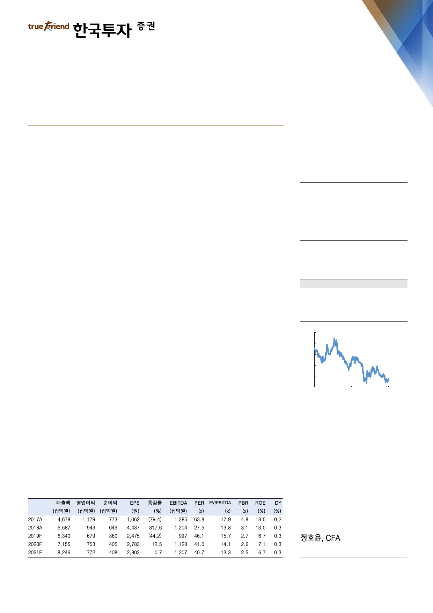

기업 Note
2019. 7. 1
NAVER(035420)
라인 컨퍼런스 참관 후기: 일본은 변화 중
매수(유지)
목표주가: 160,000원(유지)
라인 컨퍼런스의 3가지 키워드: OMO, 핀테크, 대기만성
지난 6월 27일 라인은 새로운 서비스들과 미래 전략에 대해 발표하는 라인 컨퍼
런스를 개최했다. 이번 컨퍼런스에서는 다양한 부문의 사업전략이 발표됐으나,
OMO, 핀테크, 대기만성이라고 하는 핵심 키워드를 통해 라인이 그리고 있는 미래
방향성과 가능성에 대해 알아보고자 한다.
OMO, 라인이 추구하는 미래 변화의 방향성
라인은 OMO(Online Merges with Offline)이라는 다소 생소한 개념을 제시했다.
OMO는 오프라인에 치중되어 있는 일본의 콘텐츠 및 서비스를 라인의 온라인 생
태계 안으로 끌어들이겠다는 것을 의미한다. 콘텐츠 부문에서는 일본의 출판 매체
중 큰 시장을 차지하고 있는 잡지를 앱으로 볼 수 있는 서비스인 ‘LINE Mook’을
출시했으며, 일본의 다양한 콘텐츠 크리에이터들이 영상을 제작하고 공유할 수 있
는 서비스인 ‘Vision’ 또한 출시했다. 이를 통해 오프라인 시장비중이 여전히 압도
적인 일본의 콘텐츠 산업을 점차 온라인으로 끌어들일 것이다.
O2O 및 커머스에서도 온라인과 오프라인을 보다 정교하게 결합시키고자 하는 다
양한 시도들이 진행 중이다. 여행 중 주변 지역의 레스토랑과 놀거리 추천 및 예약
/결제가 가능한 오데카게 나우(Odekake now)를 출시하고, 이를 기존의 LINE
Travel과 결합함으로써 서비스를 강화할 예정이다. 또한 오프라인 가맹점에서 상
품을 구입 시 라인 포인트를 적립해 주는 쇼핑 고와 음식 테이크아웃 서비스인 라
인 포케오 등을 출시함으로써, 점차 오프라인 중심의 일본 서비스들을 온라인화
하려는 노력을 꾸준히 기울일 예정이다.
Stock Data
KOSPI(6/28)
2,131
주가(6/28)
114,000
시가총액(십억원)
18,789
발행주식수(백만)
165
52주 최고/최저가(원)
156,400/106,500
일평균거래대금(6개월, 백만원)
60,431
유동주식비율/외국인지분율(%)
78.1/58.1
주요주주(%) 국민연금공단
10.1
BlackRock Fund
Advisors 외 13 인
5.0
주가상승률
절대주가(%)
KOSPI 대비(%p)
1개월
5.1
1.1
6개월
(6.6)
(10.9)
12개월
(23.7)
(15.8)
주가추이
(천원)
200
180
160
140
120
100
Jun-17
자료: FnGuide
Jun-18
Jun-19
핀테크, 퍼즐조각이 맞춰지는 중
라인의 핀테크 비즈니스는 아직 느리지만 서서히 퍼즐조각이 맞춰지고 있다. 우선
사회적으로는 정부와 기업(라인, 소프트뱅크, 라쿠텐 등)의 노력과 함께 중국인 관
광객 수가 증가하면서 QR코드 방식의 오프라인 간편결제에 대한 인지도가 높아지
주: 순이익, EPS 등은 지배주주지분 기준
junghy@truefriend.com